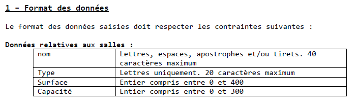
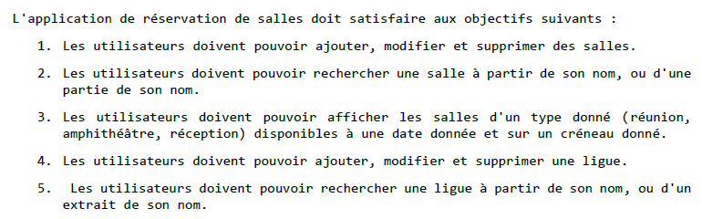
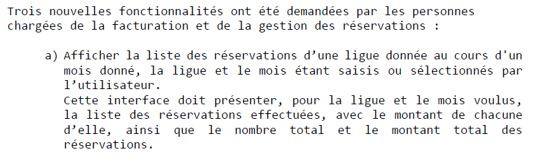

Collecter, suivre et orienter des demande
Lorsque nous avons reçu la deuxième version de l'application, notre rôle a été de contrôler les input pour que chacun d'eux respecte les valeurs attendus.

Pour se faire, chacun des membre du groupe a prit en charge un domaine (salles, ligues, réservant),
puis, grâce à l'outil de ticketing de GitLab, à :
- créé un ticket correspondant à son domaine
- assigné le ticket à un membre du groupe en donnant au ticket un poid et une échéance
- commenté et cloturé chacun des tickets qui lui on était assigné
Cela nous a donc permis d'apprendre le système de ticketing et son fonctionnement.
Traiter des demandes concernant les applications
Le principe même de ce projet était de traiter des demandes concernant l'application de réservation des salles de la M2L. On a :
- Vérifier le bon fonctionnement de l'application grâce à un cahier des charges fonctionnel :

- Valider les contrôles de saisie :
- Modifier l'interface de l'application pour répondre aux besoins :
